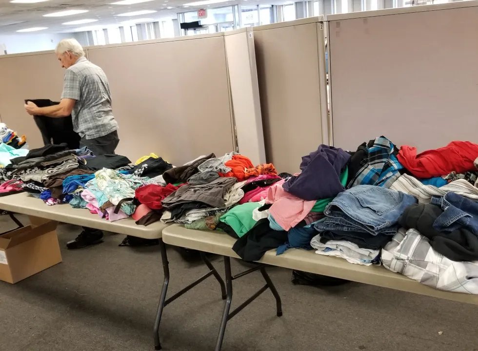
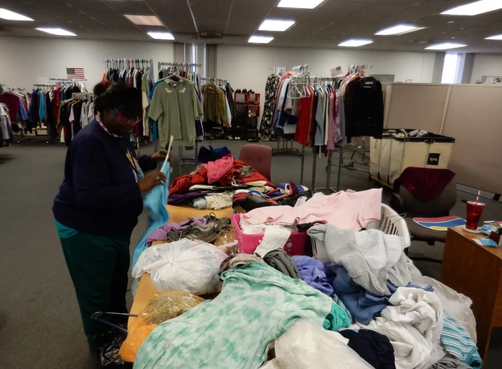

Veterans Coming Home Center
A Division of New Life Evangelistic Center
Giving Changes Lives
As a non-profit 501(c)3 every gift counts. New Life Evangelistic Center receives no Federal, State or Local dollars from the Government. Through the help of local Churches and businesses we are able to serve the homeless. When you give to the Veterans Coming Home Center you change lives in your local community. All financial or in kind gifts contribute to the work in Springfield. We are the only day shelter for men and women in Springfield. When other ministries are full, overburdened or constrained by limited resources the VCHC is able to step in and help the homeless. The ongoing great need that we face is a testimony of faith in a powerful God. Your gifts are needed!
Levels of Giving
In Kind Always Needed
 Here are some items that are always needed and use on a monthly basis:
- Hygiene Items
- Seasonal Clothing (Men and Women) (S - 3x)
- Backpacks/Bags
- Shoes, Socks and Underwear (Men and Women)
- Blankets/Sleeping Bags
These items are needed all year long. If you have something that you would like to give but you are not sure if it's needed please contact us.